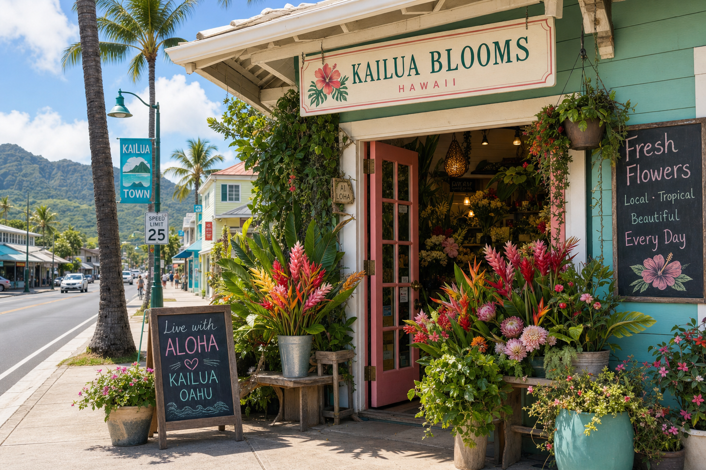

Kailua has transformed over the past decade from a sleepy Windward Oahu beach town into one of the island's most charming destination neighborhoods. With its incredible beaches, boutique shopping, and farm-to-table restaurants, it's no surprise that Kailua has also developed a vibrant community of talented artisans — including several excellent flower shops. As a Kailua florist ourselves, we want to be honest about the local landscape.
What Makes Kailua's Flower Scene Special
The Windward side of Oahu has long been home to agricultural communities. The Ko'olau Mountains capture rain on the eastern side of the island, creating lush, green valleys perfect for growing tropical plants. Several local farms in Waimanalo and the surrounding valleys grow flowers specifically for Windward Oahu florists, meaning you get genuinely local, fresh blooms that aren't shipped from the mainland or even from another island.
Farmers Market Flowers
The Kailua Town Farmers Market (held on Thursdays) is one of the best places on Oahu to buy fresh-cut flowers directly from growers. You'll find heliconia, anthurium, ginger, bird of paradise, and sometimes orchid sprays at very reasonable prices. If you're comfortable arranging your own flowers and want to stretch your budget, the farmers market is an excellent option for everyday home flowers.
What to Look for in a Florist
When choosing a florist for an important occasion like a wedding or event, look for these signs of quality: Do they source locally? Can they show you a portfolio of real events they've done? Are they willing to do a consultation (ideally free) before you commit? Do they have clear pricing with itemized quotes? A good florist listens more than they talk in that first consultation.
Questions to Ask Before Booking
Always ask: What happens if a specific flower isn't available on my date? What is your backup plan for tropical storms or shipping delays? Do you handle setup and breakdown, or just delivery? Do you rent vases and containers or do those need to be purchased? Understanding the answers to these questions will help you avoid unpleasant surprises on your special day.
At Pikake Floral Studio, we take pride in being transparent, local, and deeply committed to our Kailua community. We'd love to be your florist for whatever life brings your way — big celebration or a simple Tuesday that deserves a little beauty.